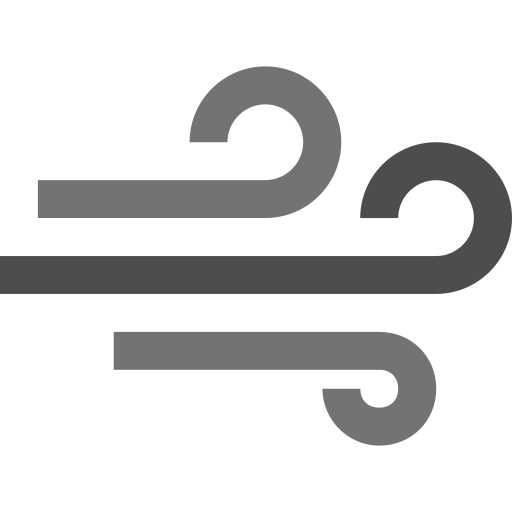
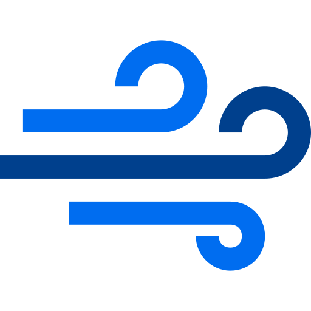

tuulikartta.info
on oman lennokkiharrastuksen kylkeen syntynyt nettisivuprojekti, joka ajatuksena on tarjota käyttäjille tuulihavaintoja (lähes) reaaliajassa.
Havaintoaineisto on Ilmatieteen laitoksen tarjoamaa avointa dataa.
Kartalla havaintosuureet on jaoteltu siten, että:

Havaintoaseman keskituuli

Havaintoaseman maksimipuuska
Havaintoaseman nimen, viimeisimmät havinnot sekä kuvaajan saa näkyviin klikkaamalla tuulinuolta.